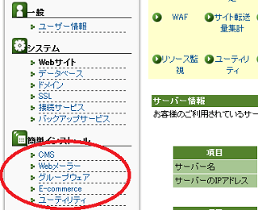
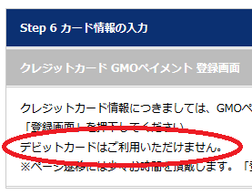
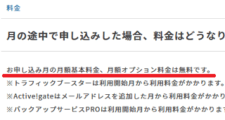

カゴヤのレンタルサーバー
カゴヤのレンタルサーバーは法人利用率が80%となっており、個人ユーザーはもちろん、教育機関や医療機関、行政機関などを含む多くの法人や団体で利用されています。リーズナブルな価格設定で中小企業でも利用しやすく、20年に渡る事業実績があるため、安心して利用することができます。
→ カゴヤ・ジャパン
共有サーバーでは全プランでマルチドメイン無料・無制限となっているため、複数のサイトを運営されている方でも利用しやすいです。
ただし、プランによってはメールが未提供となっているため、プラン内容をよく確認してから申し込むようにしましょう。
カゴヤの共有サーバーのプラン内容を比較
共有サーバーには「S11」、「S21」、「S31」の３つのプランがありますが、全プランでマルチドメイン無制限のため、複数のサイトを運営するのに利用しやすいです。
■共有サーバーの料金（税込）
「S11」 月額1,080円（12ヶ月1括の場合：864円）初期費用：無料
「S21」 月額2,160円（12ヶ月1括の場合：1,728円）初期費用：3,240円
「S31」 月額3,240円（12ヶ月1括の場合：2,592円）初期費用：3,240円
「S11」プランは初期費用が無料であるのに加え、月額料金もお手頃価格となっていますが、こちらの「S11」プランの場合は「メール」が未提供に加え、「データベース」もオプションとなっているため「S21」プランからの利用がおすすめです。
その他、専用サーバーの「マネージド専用サーバー」や学校のホームページ作成にも役立つ「アカデミックプラン」、さらに「クラウド型専用サーバー」などのプランが用意されています。
■CMSの簡単インストール機能
カゴヤでは「ファイルマネージャー機能は用意されていない」ため、何らかのCMSをインストールすることをおすすめします。「WordPress」などの簡単インストールには対応しているため、管理画面からインストールするとよいでしょう。

もしくは、パソコンにホームページ作成ソフトをインストールして、FTP接続で更新されることをおすすめします。
料金の支払い方法は「クレジットカード」か「口座振替/自動払込」
カゴヤで申し込みをする際、お支払い方法が「クレジットカード」か「銀行振替」となっているため、ネット銀行をメインに利用されている方は注意が必要です。特に、デビットカードは利用できないのでクレジットカードで登録するとよいでしょう。

ちなみに、銀行振込での支払いが可能なのかを問い合わせてみたのですが、「クレジットカードで決済いただくか、口座振替でお支払いくださいますようお願い申し上げます。」とのことでした。
ネット上では楽天デビットカードで利用できたとの情報もちらほらありますが、公式サイト上では「デビットカードは利用ご利用いただけません。」との記載がありますので、デビットカードでの登録はしない方がよいかと思われます。
ちなみに、申し込みをする際、申し込み月の「月額基本料金」と「月額オプション料金」は無料とのことですので、月はじめに申し込んだ方が得かもしれません。

そのほか、料金は「毎月月末締めの後払い」となっているようです。新設法人の場合、法人口座やクレジットカードを作っていない方もいらっしゃるかもしれませんが、個人ユーザーの場合は特に問題なく利用できるかと思います。
法人向けレンタルサーバー一覧
- お名前.comサーバー （GMOグループ）
- エックスサーバービジネス （当サイトはこちらを利用中）
- ニフクラ レンタルサーバー （富士通グループ）
- ＣＰＩ （KDDIグループ）
- アルファメール （大塚商会）
- iCLUSTA+ （長年の運用実績）
- グーペ （お店向け・個人事業、法人）
- カゴヤ （自社所有データセンター）